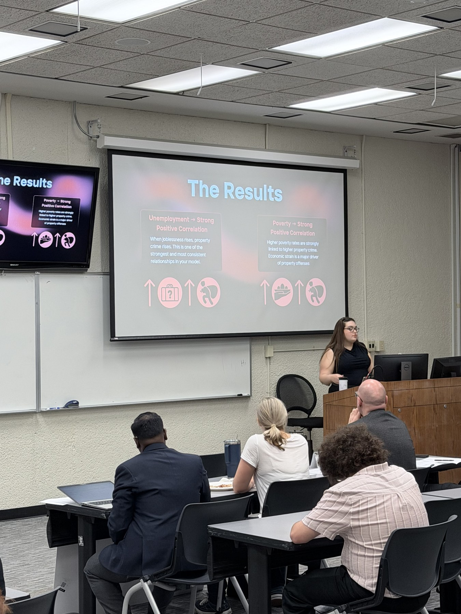
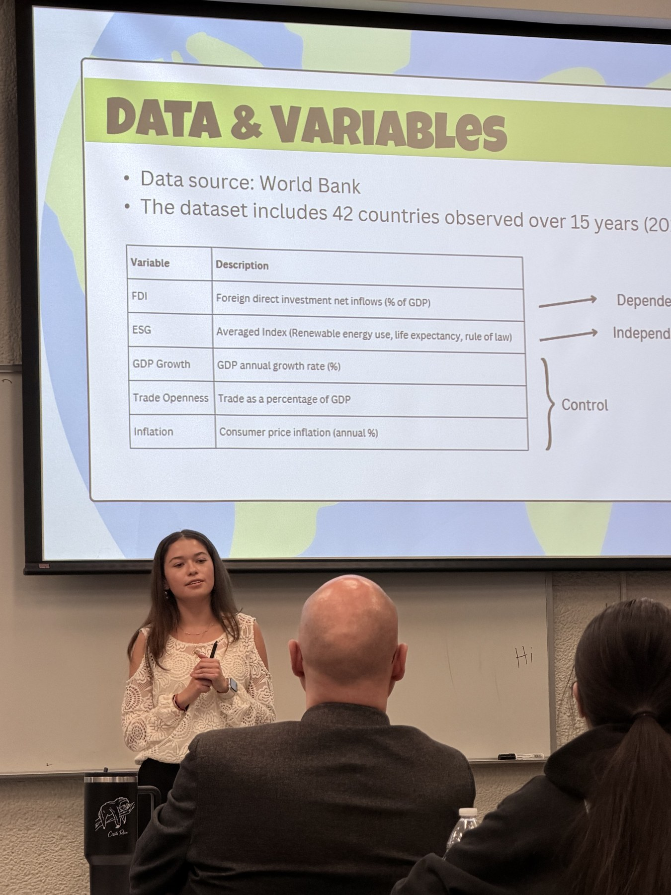
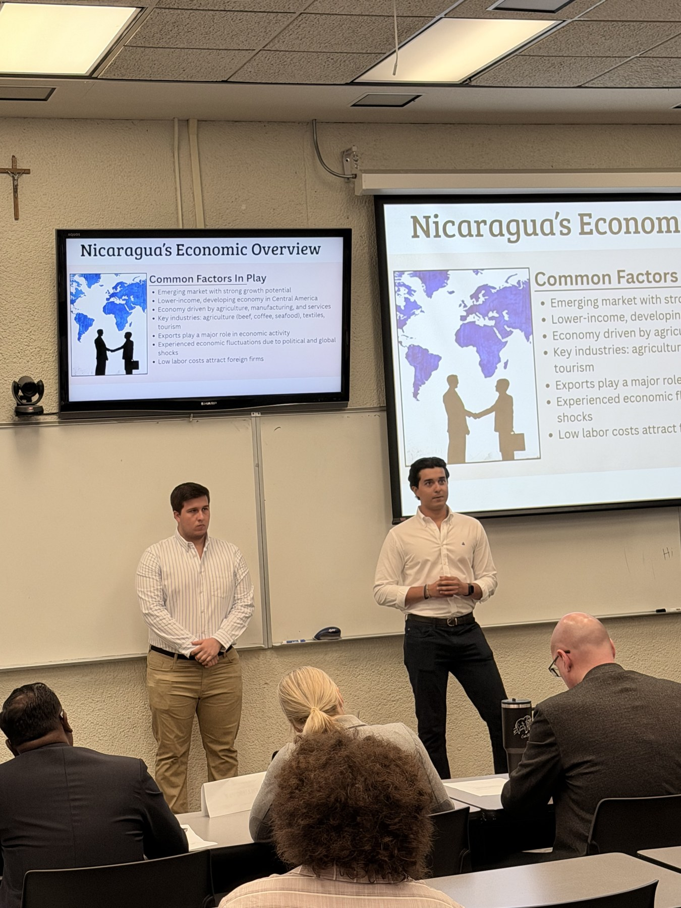
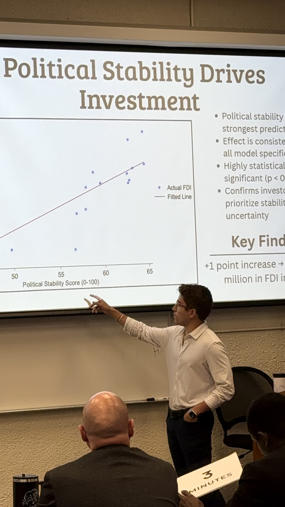
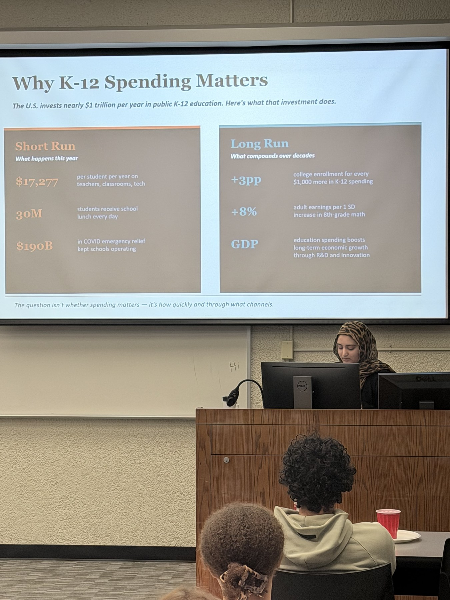
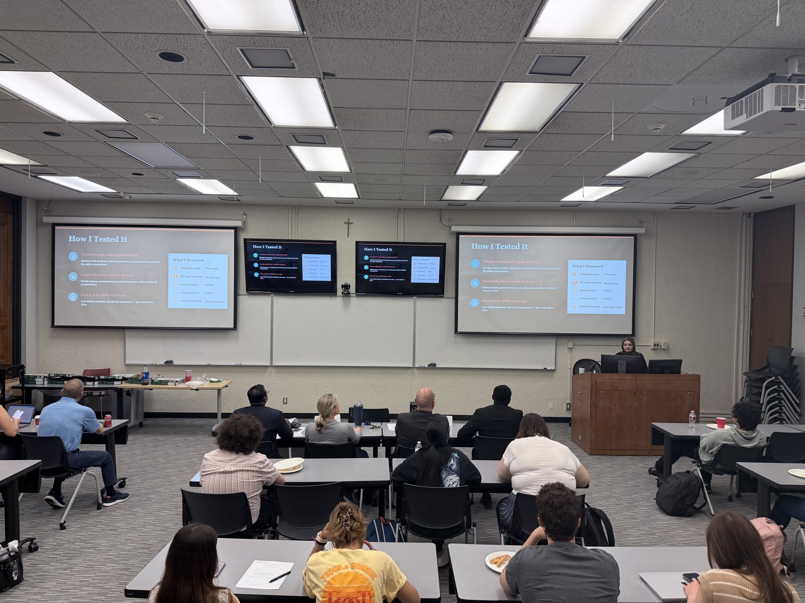
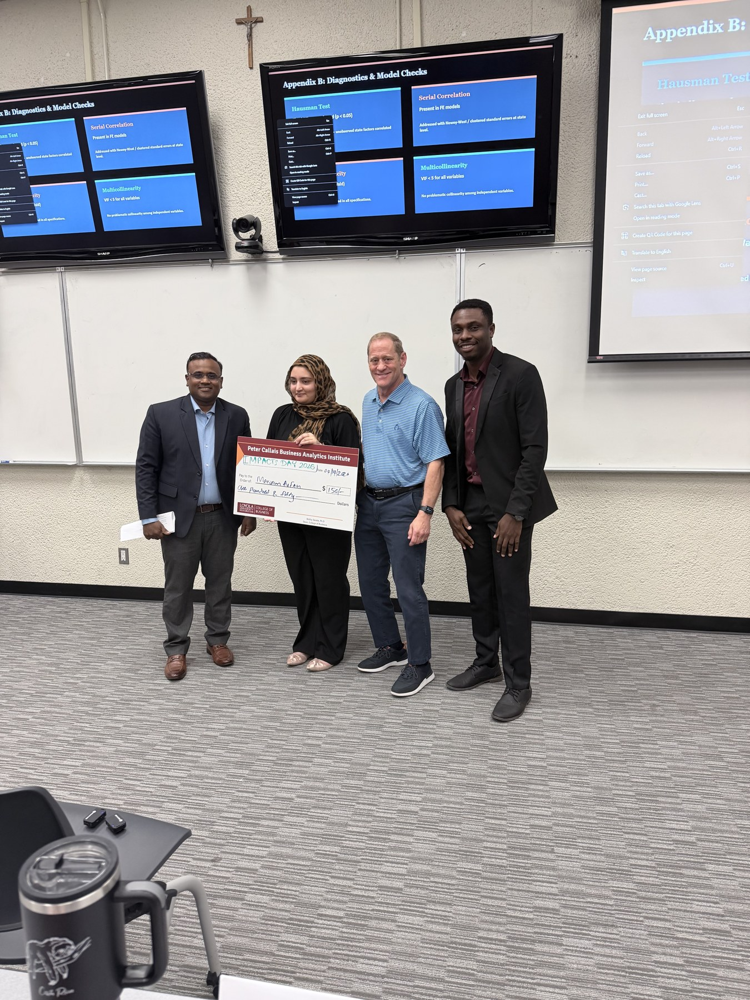
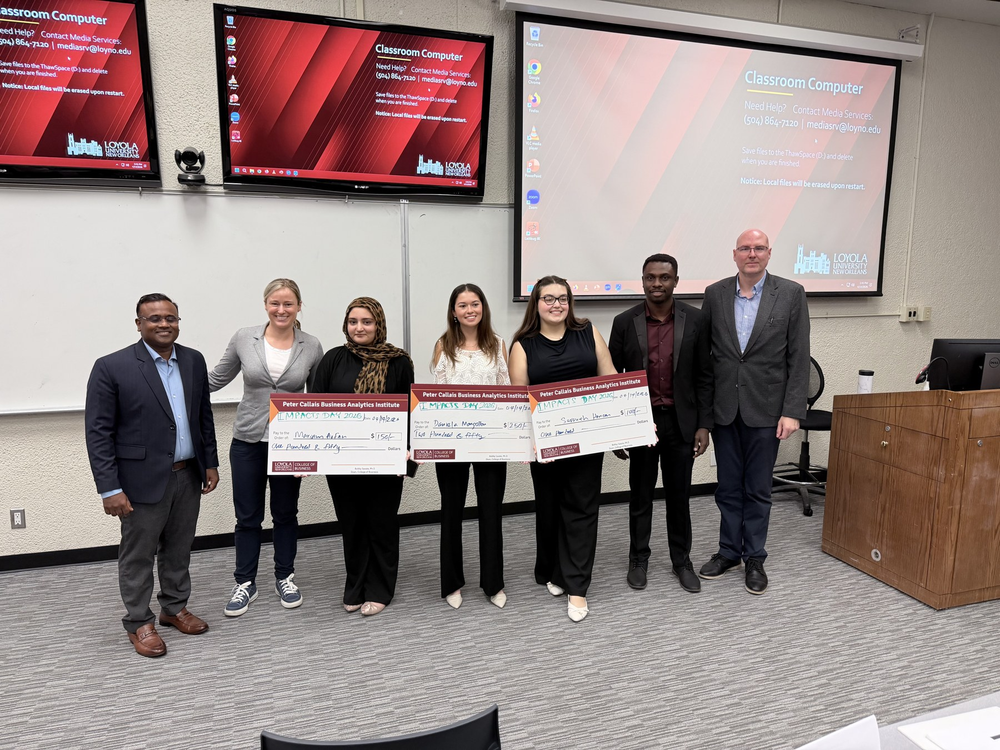

Students — Student Organization
Business Analytics Club
Connect with fellow analytics students — events, workshops, and community.
Get Involved
Join the Club
The Business Analytics Club is open to all Loyola students interested in data, analytics, and the community around it. Join on HowlConnect to get involved and stay in the loop.
Join on HowlConnect →Scan to join on HowlConnect
Club Life
Moments from the Club







